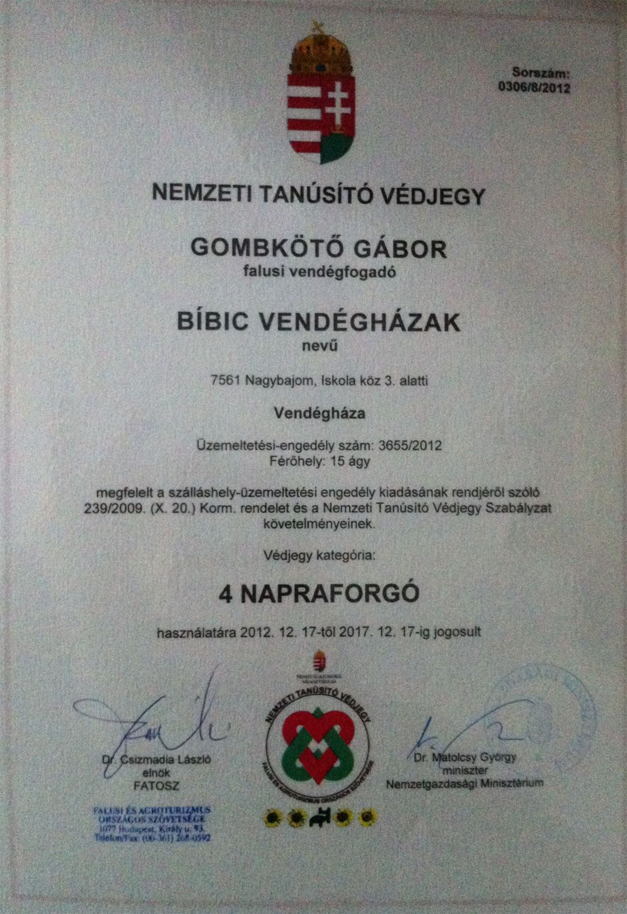
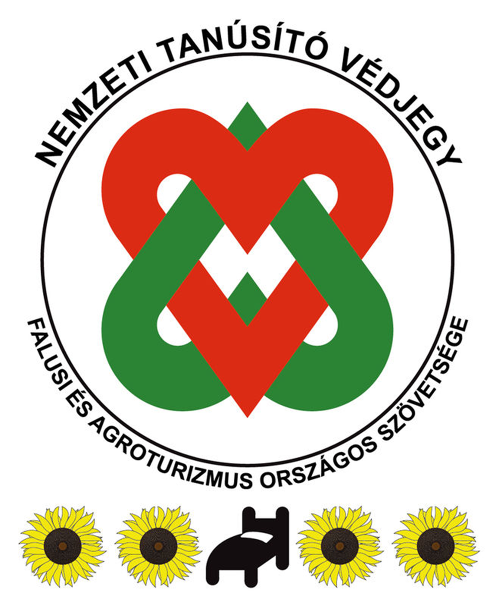

Szeretettel üdvözöljük a
Bíbic vendégházak
honlapján!
-
Hegedüs Péter
Bíbic Vendégházak házigazdája
-
Hegedüsné Kóró Ágnes
Fauna ház tulajdonosa
-
Gombkötő Gábor
Flóra ház tulajdonosa
A nagybajomi panzió, illetve vendégház tervét családi ötletelés - Hegedüs Péter és Gombkötő Gábor, testvérek vagyunk - alkalmával találtuk ki 1998-ban.
~
Hosszú évekig csak ötlet, illetve tervezgetés maradt a finanszírozás hiánya miatt. 2008-ban azonban a Mezőgazdasági és Vidékfejlesztési Hivatal pályázatot írt ki, turisztikai fejlesztések támogatására.
~
Ekkor, két négy napraforgós vendégház építésére támogatási kérelmet nyújtottunk be - Hegedüsné Kóró Ágnes és Gombkötő Gábor - a Hivatalhoz, melyet 2009-ben meg is ítéltek számunkra. Az előkészületek és az előfinanszírozás megszervezése után 2010-ben elkezdődhetett a Flóra ház építése. 2012-ben kaptunk működési engedélyt. Jelenleg az utolsó fázis van folyamatban, kertépítés, parkosítás.
Vendégházaink négy napraforgós minősítéssel rendelkeznek. Ez azt jelenti, hogy rendelkezünk minden szobánkhoz külön fürdőszobával, a házainkban felszerelt konyha és közösségi (nappali) tér van, kerthelyiségünk, teraszunk bútorozott és zárt parkolót tartunk fenn vendégeink számára, valamint házunk megfelel a FATOSZ által elvárt minősítési követelményeknek.
- 
- 
Szolgáltatásaink
Galéria
-
Klimatizált helyiségek, fürdőszobás szobák, felszerelt konyha, tágas étkező-nappali, előadó terem.
-
Klimatizált konferencia terem, bárpulttal, sörcsappal, vinotékával (50 főig).
-
Kerti konyha, kemencével, bográcshellyel, csikó tűzhellyel (rem sütő), grillezővel, füstölővel, kerti bútorral. Az aktív pihenést kedvelőknek ping-pong asztal, kerékpárok a gyermekeknek játszó tér áll rendelkezésére.
Szobák
Flóra ház
-
1. Szoba
Két személy részére franciaággyal, fürdőkádas fürdővel

-
2. Szoba
Kétágyas szoba, pótágyazható, kerekes székkel is megközelíthető, zuhanyozós fürdővel

-
3. Szoba
Emeleti háromágyas szoba erkéllyel, zuhanyozós fürdővel

-
4. Szoba
Emeleti háromágyas erkélyes szoba, pótágyazható, zuhanyozós fürdővel

-
5. Szoba
Emeleti háromágyas szoba, pótágyazható, zuhanyozós fürdővel

-
6. Szoba
Emeleti ötágyas szoba, pótágyazható, zuhanyozós fürdővel

Árak
KEDVEZMÉNYES ÁRAK: EGYEDI AJÁNLAT ALAPJÁN! KÉRJEN KÜLÖN AJÁNLATOT!
-
Két ágyas7.000.-/fő/éj
-
Három ágyas6.000.-/fő/éj
-
Pótágy4.500.-/fő/éj
-
Teljes ház90.000.- max 19 fő
Az árak forintban értendők, tartalmazzák a reggeli árát és az Idegenforgalmi adót.
SÖRÖZŐ bérleti díjak
(a teljes teremre értendő, kiszolgáló eszközökkel és személyzettel 65m2):
-
4 óra16.000.-
-
8 óra 28.000.-
-
10 óra 35.000.-
-
Egész nap50.000.-